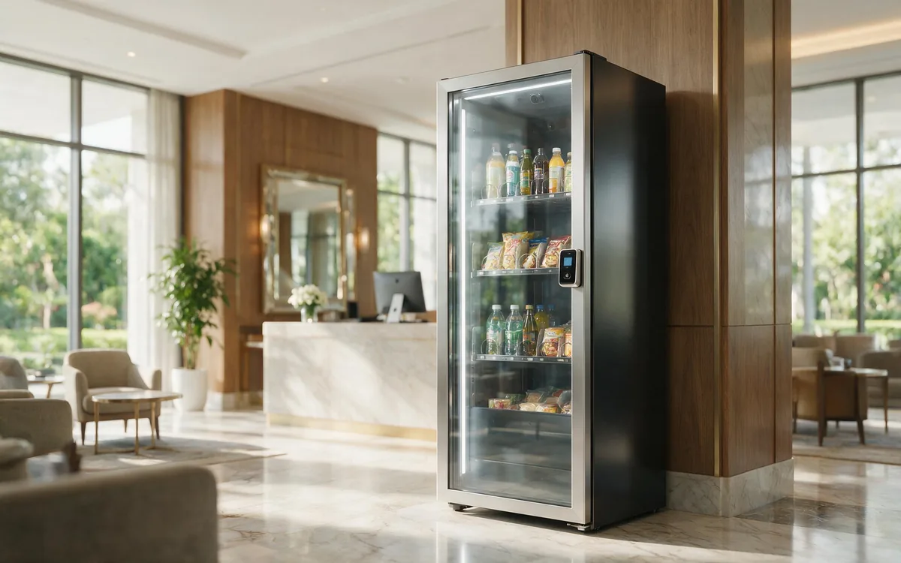

AI Vending for Hotels

The scenario
Guest demand does not end when room service does. In most hotels, the food and beverage operation shuts down by late evening, and a guest who wants a snack, a drink, or a forgotten charger at 1 AM has few options — a vending machine in a hallway or a front desk with a limited selection and nobody scheduled to run it. An AI vending unit placed in the lobby or by the elevators gives guests a small, premium 24/7 shop, and it gives the hotel incremental revenue without adding a single staffing shift.
Hotels are different from other venues because the guest experience is the product. The unit is not just a sales channel — it is an amenity that shows up in reviews and guest satisfaction scores. Done well, it quietly resolves the most common guest frustrations: hunger after hours, forgotten toiletries, and the dead phone in the room.
Who you are serving
- Guests. Travelers who are tired, on a schedule, and often paying premium rates. They have low price sensitivity for convenience items and high expectations for quality.
- Business travelers. Late arrivals, early departures, and late-night work sessions create demand outside every normal retail window.
- Families. Kids get hungry at odd hours and parents forget essentials; these are the most frequent impulse buyers.
- Hotel staff. Front-desk and housekeeping staff buy from the unit too, adding baseline volume and, importantly, they stop fielding "where can I buy a charger?" requests.
The recurring pain points are consistent across hotels: room service is closed, the mini-bar is expensive and limited, front-desk loaner programs run out of chargers and adapters, and guests hate leaving the building for one small item. Each is a purchase the unit can capture.
Why AI vending fits
- Demand is spread across all hours, with a strong late-night peak after room service closes.
- Guests are the most price-tolerant buyers in retail — they are already paying a premium for the room.
- The unit replaces or supplements the mini-bar, which is labor-heavy and generates charge disputes.
- It answers front-desk requests for chargers, adapters, and toiletries automatically, freeing staff time.
- A premium, well-merchandised unit reinforces the hotel’s brand instead of cheapening it.
Peak buying windows
- Check-in and arrival (3–8 PM): water, snacks, and forgotten essentials bought right after guests drop their bags.
- Late-night (10 PM–2 AM): the biggest window — snacks, drinks, and comfort items after room service closes.
- Early morning (5–8 AM): coffee, breakfast bars, and hydration for early departures before breakfast service.
- Event and conference breaks: coffee, energy bars, and mints outside meeting rooms during daytime events.
Where to place the unit
- Lobby near the elevators. The highest-traffic path in the hotel and visible to every guest several times a day.
- Fitness center. Guests working out at 6 AM or 10 PM need water and recovery items — a natural fit.
- Poolside or leisure floors. Towels, drinks, and snacks for resort-style properties.
- Conference and event floors. Meeting attendees buy 2–3 items per break; the unit replaces or reduces catered break stations.
- Guest floor pantries. In larger properties, a small unit on high-occupancy floors shortens the trip to a few steps.
How to choose products for this venue
Hotel guests buy with their eyes and their mood. The mix should feel boutique, not utilitarian, and should lean into premium and local.
Traffic drivers (water and beverages)
- Premium bottled water, sparkling water, sodas, and craft beverages.
- Water is the most universal hotel purchase. Price it fairly — it sets the tone for the whole unit.
Profit drivers (premium and local)
- Protein bars, gourmet nuts, artisanal chocolates, craft snacks, and local specialty treats.
- Guests have low price sensitivity for premium convenience, and a local or artisan selection creates a genuine discovery moment that raises the hotel’s perceived quality.
- Fresh items like sandwiches or yogurt work in high-traffic properties with strong demand, but start cautiously — hotel fresh food has tighter waste risk than packaged premium snacks.
Travel essentials (high margin)
- Phone cables, universal travel adapters, eye masks, earplugs, mini toiletries, and OTC pain relievers.
- These carry the highest margins in the unit and directly replace front-desk loaner programs, which are labor-heavy and constantly out of stock.
Keep a small "wind-down" cluster — eye masks, earplugs, and chocolate — so guests at midnight see everything they need in one glance.
How to arrange the shelves
The unit should read as a boutique shelf, not a vending machine. Guests associate visual quality with the hotel’s brand, so presentation matters more here than anywhere:
- Top shelves (travel essentials): chargers, adapters, eye masks, and toiletries — the "forgot it" panic items.
- Middle shelves (eye level, profit zone): premium snacks, craft drinks, and local specialties. Front-facing labels, uniform shelf heights.
- Bottom shelves (staples): premium water bottles, sparkling water, and sodas.
Dedicate one visible section to local or regional brands — the discovery moment justifies premium pricing. Keep the design clean, consistent, and well-lit.
Running the unit well
- Restock rhythm: check and restock daily if possible, with a focused top-up before the late-night window. Hotels generate steady, constant demand.
- Payments: contactless cards and mobile wallets are essential. Guests should be able to pay with a tap, including international cards.
- Mini-bar synergy: let the unit carry the items that cause mini-bar disputes (snacks, drinks) and keep the in-room bar minimal, cutting housekeeping labor and charge-backs.
- Guest service integration: if the hotel offers welcome credits or service recovery (e.g., an apology credit after an issue), these can be issued as account credits through the operator’s platform — guests tap and the credit applies, no codes required.
- Data: use sales data to tune the mix per property — a business hotel and a family resort will sell completely different ranges.
What success looks like
Hotel units earn on two ledgers: direct sales and guest experience. On the sales side, a busy property unit can comfortably exceed typical vending performance because of premium pricing and constant demand. Track:
- Transactions per day and average basket — with the late-night window usually the largest slice.
- Repeat and multi-day purchases — guests who discover the unit on night one often return on night two.
- Front-desk request reduction — fewer "do you have a charger?" questions is a real labor saving.
- Guest satisfaction signals — review mentions of convenience and the unit itself.
- Stockout rate on essentials — running out of chargers or water at 11 PM is a visible failure.
Common mistakes to avoid
- Stocking it like a gas station. Discount-brand snacks and energy drinks cheapen the guest experience and underperform premium items.
- Putting it out of sight. A unit hidden in a back hallway gets a fraction of the use of one on the elevator path.
- Fighting the mini-bar instead of complementing it. Agree on which channel owns which products.
- Ignoring the late-night window. If the unit is empty at midnight, the hotel is losing its best hours.
- Letting it look tired. Dusty shelves and out-of-date product faces damage the brand more than the revenue justifies.
Frequently asked questions
What sells best in a hotel?
Premium water and beverages drive traffic; premium snacks, local treats, and travel essentials like chargers and adapters drive the highest margins.
Does the unit compete with room service or the mini-bar?
It should complement them. Many hotels use it to replace or shrink the mini-bar, which cuts housekeeping labor and eliminates charge disputes.
How do guests pay?
Contactless cards and mobile wallets, including international cards. No app or account is needed.
Can the hotel offer credits to guests through the unit?
Yes. Welcome credits or service-recovery credits can be added to guest accounts via the operator’s platform, so the guest taps and the credit applies automatically.
Who services the unit?
The operator handles restocking, maintenance, and payments. Hotel staff do nothing beyond pointing guests to it.